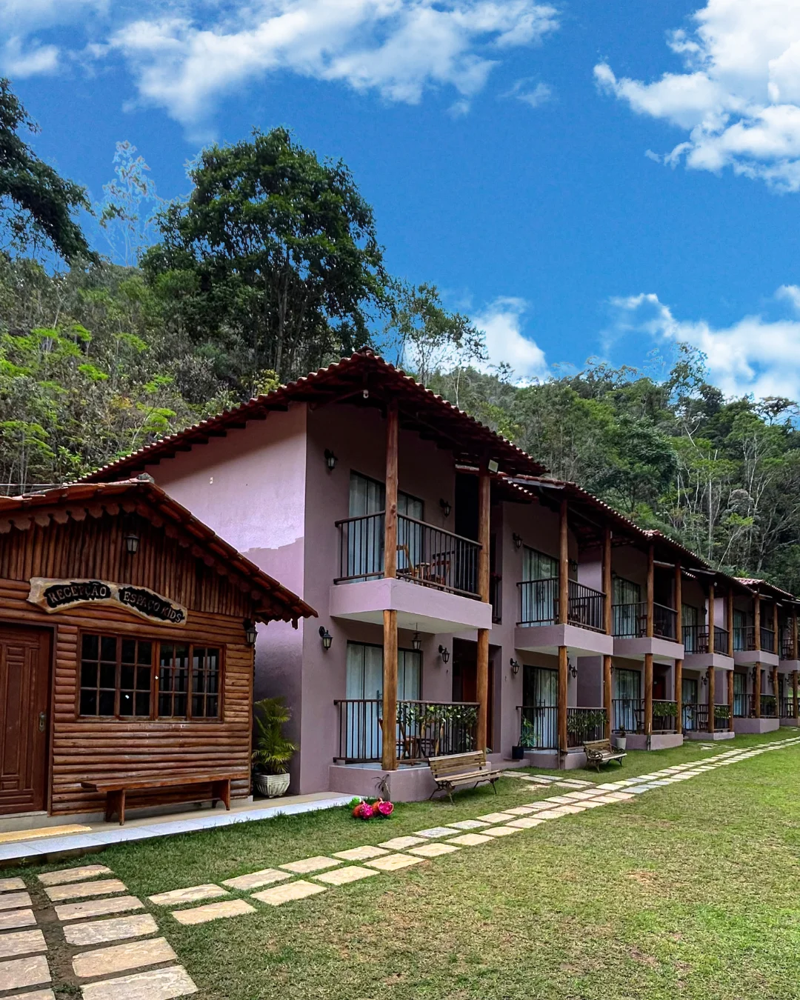
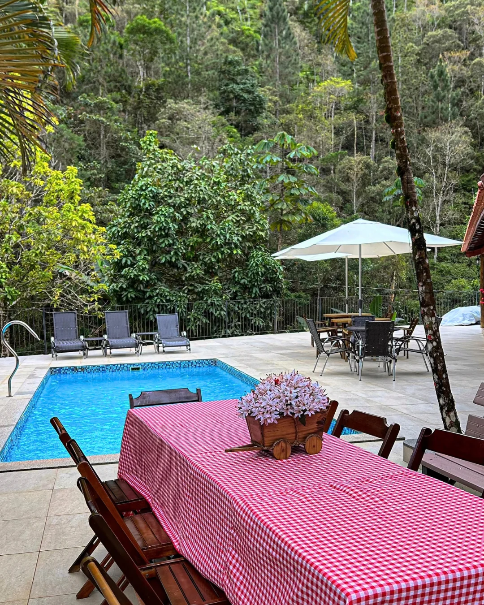
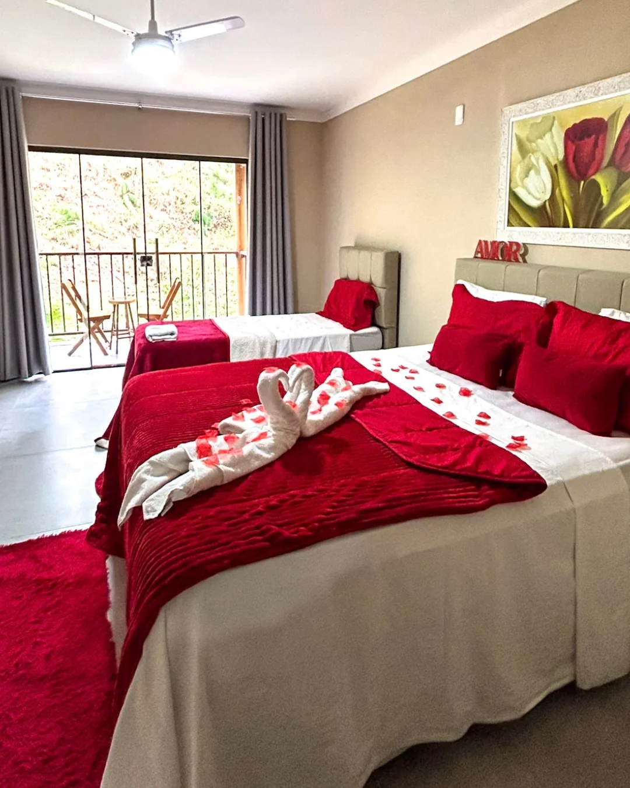
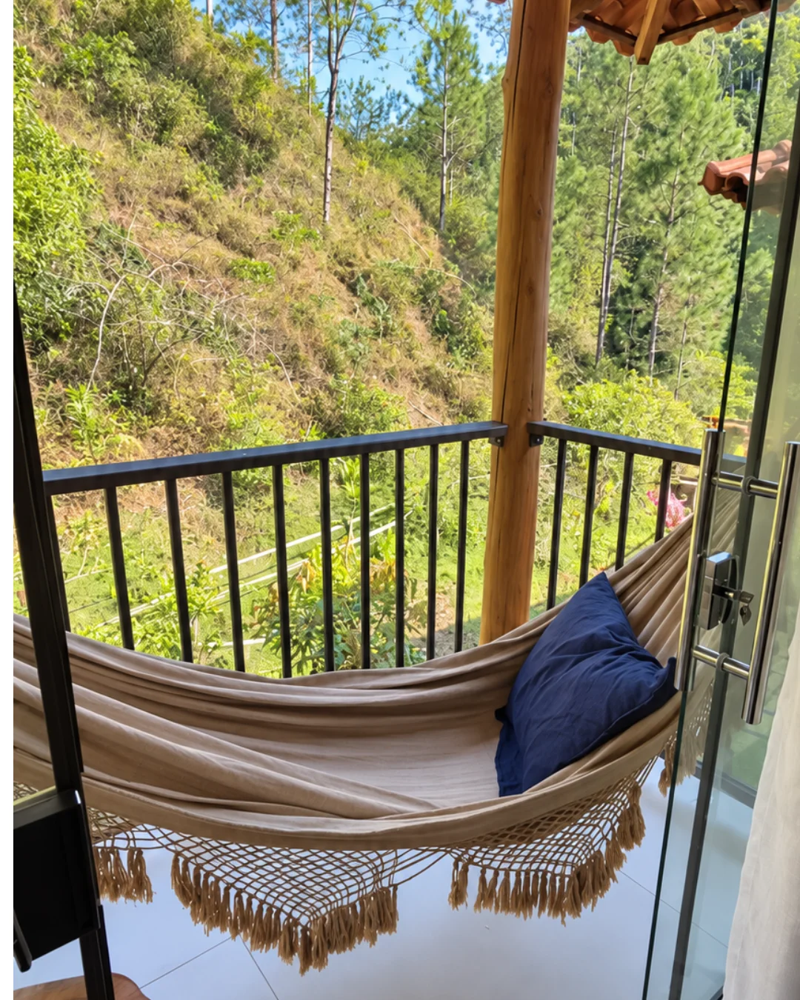
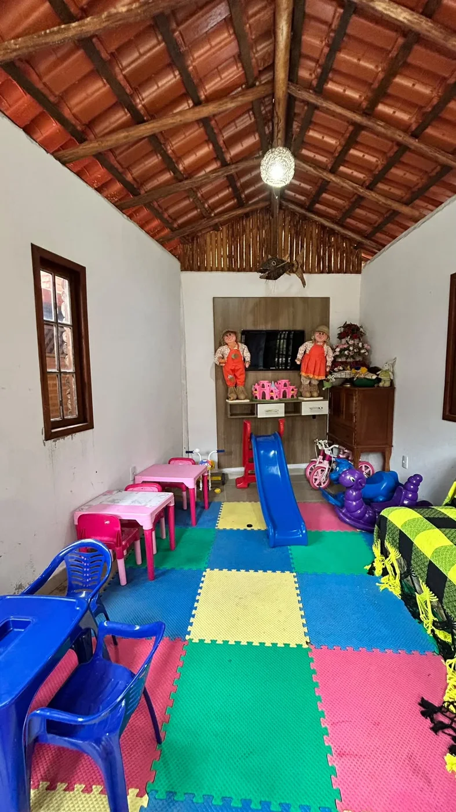
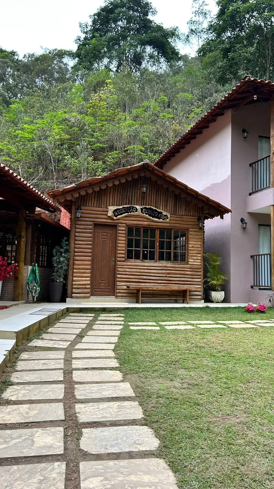
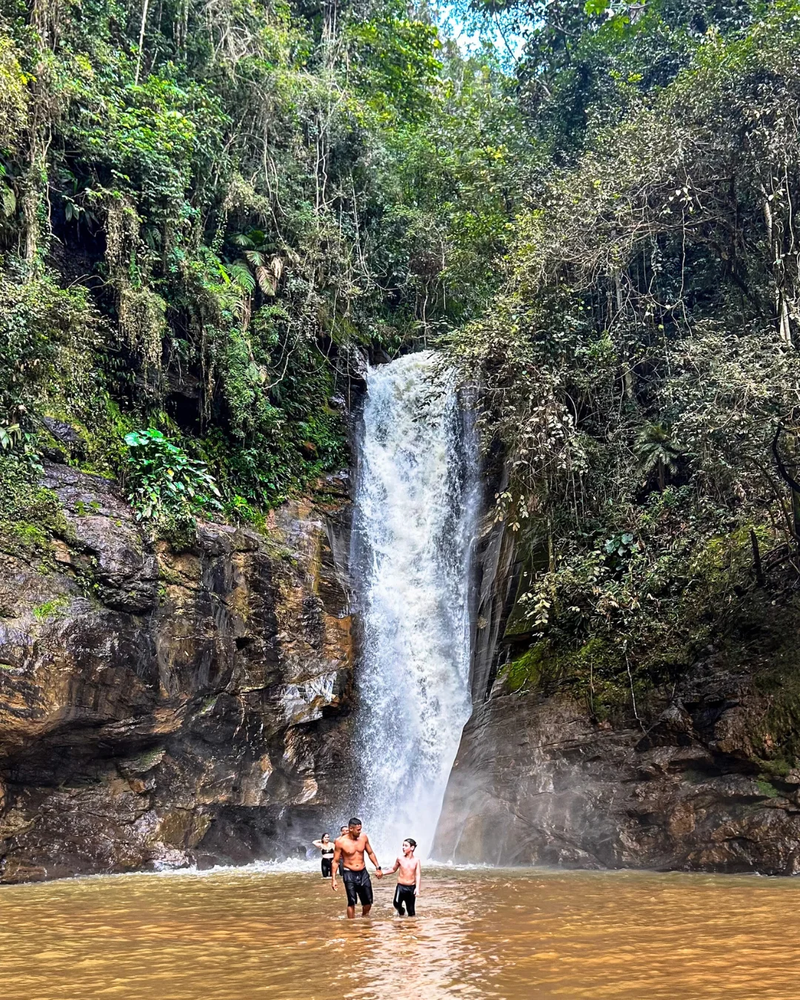
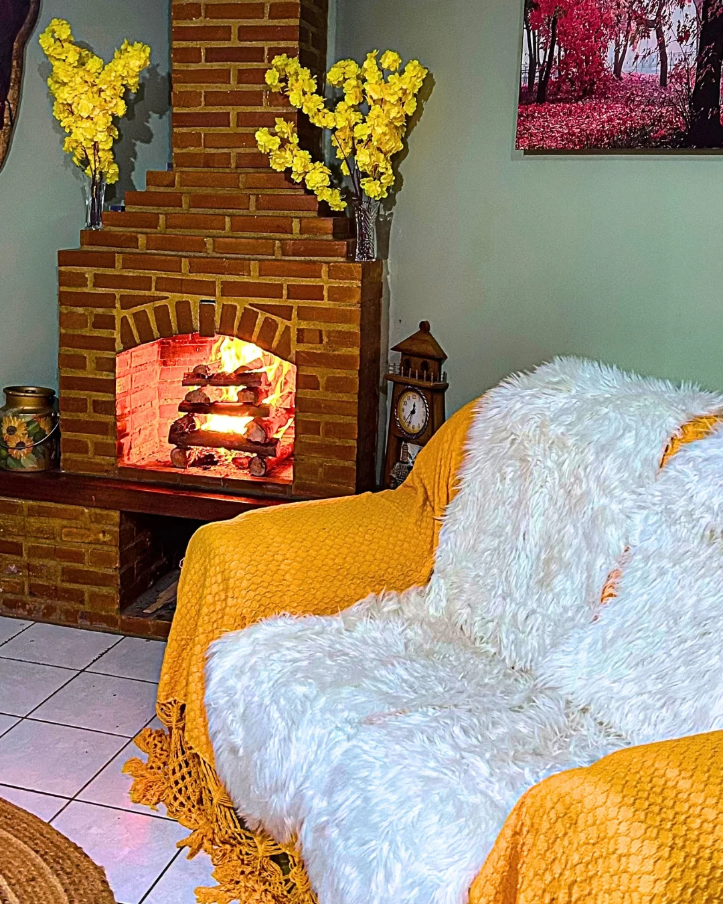
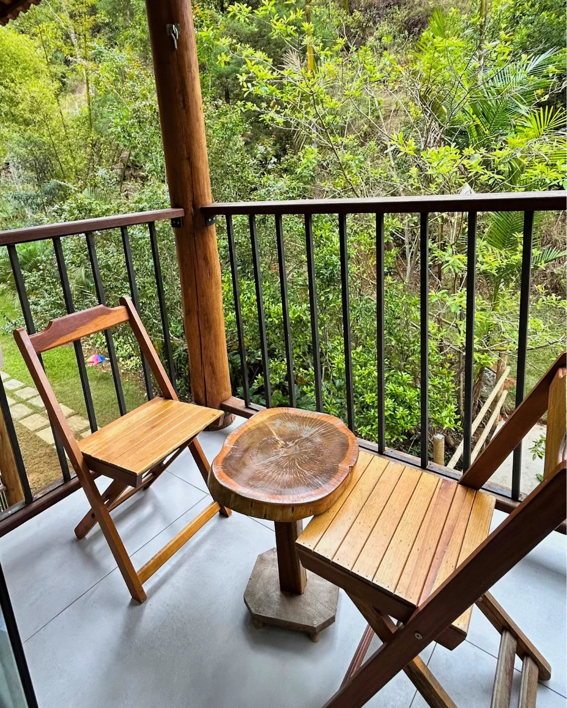

Café da manhã
Acorde sem pressa e aproveite a primeira refeição do dia na pousada.

MATILDE · ALFREDO CHAVES · ES
Natureza, aconchego e pensão completa.
Seu tempo aqui é para aproveitar.

BEM-VINDO À YRACEMA
Entre o verde de Matilde e o ritmo tranquilo do interior, a Pousada Yracema convida você a fazer uma pausa.
Um mergulho na piscina, uma conversa sem pressa, o descanso na varanda. Aqui, os pequenos momentos ganham espaço.
Descubra seu próximo refúgioUM PASSEIO PELA YRACEMA
Conheça os espaços, os sabores e a natureza que fazem parte dessa experiência.
Assista ao vídeo e comece a imaginar os seus dias em Matilde.
Planejar minha estadiaSEU CANTINHO DE DESCANSO
Aconchego por dentro.
Natureza logo ali, do lado de fora.


ACOMODAÇÕES
Conheça as opções disponíveis para sua viagem a dois ou em família. Consulte a equipe sobre a acomodação ideal e os detalhes da sua estadia.
Consultar acomodaçõesPENSÃO COMPLETA
Café da manhã, almoço e café colonial.
Três momentos para saborear a sua estadia.
Acorde sem pressa e aproveite a primeira refeição do dia na pousada.
Depois de aproveitar a manhã, é hora de sentar à mesa e repor as energias.
Caldos, tortas, bolos e aquele convite para prolongar a conversa à mesa.
SABORES QUE FAZEM PARTE DA VIAGEM
A pensão completa inclui café da manhã, almoço e café colonial a partir das 18h. À noite, a refeição oferecida é o café colonial; não há jantar separado.
Consultar estadia com pensão completa

PARA VIVER EM FAMÍLIA
A brinquedoteca é um cantinho para os pequenos também aproveitarem a viagem, com mesinhas, escorregador e brinquedos.
Entre as brincadeiras e os momentos ao ar livre, crie novas memórias com quem você ama.
Planejar uma viagem em famíliaVIVA NO SEU TEMPO
Não precisa preencher a agenda.
Às vezes, o melhor plano é apenas ficar.
A piscina, o verde e um dia inteiro para aproveitar sem olhar para o relógio.

02 / EXPLORARDescubra as cachoeiras da região. Peça à equipe orientações sobre passeios, acesso e condições de visita.

03 / DESACELERAREspaços que convidam a uma boa conversa e ao prazer de não ter pressa.

O LUXO DE ESTAR PRESENTE
Traga quem faz os seus dias mais felizes.
O cenário está aqui.
UM POUQUINHO DAQUI
Toque nas fotos para ver de perto.
ANTES DE FAZER AS MALAS
Fale com a gente para planejar cada detalhe.
Informe as datas e o número de hóspedes no formulário abaixo. Você será direcionado ao WhatsApp para receber as opções e os valores com a equipe da pousada. A consulta não confirma uma reserva.
A hospedagem com pensão completa inclui café da manhã, almoço e café colonial a partir das 18h, com caldos, tortas e bolos. Não há jantar separado. Confirme com a equipe os demais horários e as condições do pacote escolhido.
Sim! A pousada conta com uma brinquedoteca com mesinhas, escorregador e brinquedos para os pequenos.
Informe as idades das crianças e, se desejar levar um pet, consulte previamente as condições de hospedagem com a equipe.
Converse com a equipe sobre localização, deslocamento, eventuais taxas e condições de acesso. Os passeios dependem das condições locais e do tempo.
Confirme os horários de entrada e saída, formas de pagamento e condições de cancelamento diretamente com a pousada antes de reservar.
O PRÓXIMO PASSO É LEVE
Conte quando você quer vir.
Vamos planejar esses dias juntos.
Carolina · região de Matilde
Alfredo Chaves — Espírito Santo